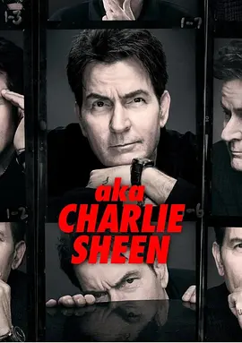

7.9
查理·辛的演艺人生
aka Charlie Sheen
2025
美国
评分 7.9
导演:
安德鲁·伦齐
演员:
查理·辛 / 丹妮丝·理查兹 / 海蒂·弗烈丝 / 乔恩·克莱尔 / 西恩·潘
类型:
剧情
剧情简介
从加州马里布的阳光早晨出发，查理·辛作为好莱坞演员的传奇人生渐渐展现在镜头前：他少年出身演艺世家、初尝荧幕成功、迅速成为万人瞩目的巨星。但当镁光灯背后，夜夜狂欢、毒品成瘾、媒体轰炸，这一位曾被称为“赢家”（Winning!）的人生轨迹开始偏离轨道。导演安德鲁·伦齐通过两集纪录片，以鲜明节奏展现查理从巅峰滑落，再到戒毒七年、重塑自我。在熟悉的电视现场、电影片段、家属访谈与亲友叙述中，我们看到查理怎样面对离婚、怎样被推到公众绞肉机般的关注中，亦看到他的沉默被打破，他首次坦承与男性曾发生性关系，引发他内心认同与公众形象的冲突。纪录片既有他曾纵情的豪宅派对、高空酒驾，也有朋友与前妻目光中的失望与伤痛。镜头中，他坐在破旧餐厅角落，静静说出一句：“羞耻曾压得我喘不过气……但也可能变成指北星。”这一刻，他不是完美的英雄，而是一个在镜子中看清自己破碎的人。纪录片借助他朋友、同事、家人语言组成合唱：他们谈笑间，亦掩着泪水；他们拍打肩膀，亦苦笑着回忆。整部作品没有回避，而是让观众在纪录者视角之外，亲历那份“名利＋药物＋欲望”交织下的迷失。它不是为了道德审判，而是把“人性”“失败”“救赎”三者放在同一镜头里，邀请你或他、或我，反思——当一个人曾拥有全部，却也失去全部时，他要怎样重新定义“赢”？